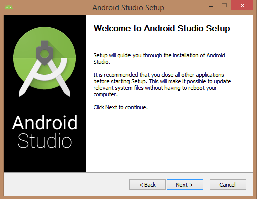
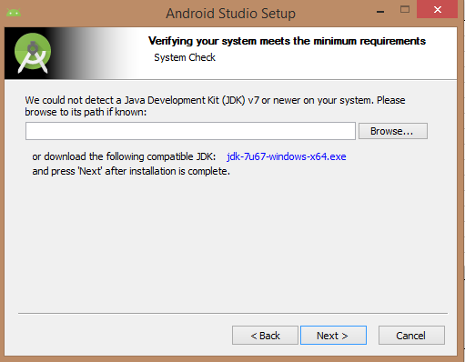
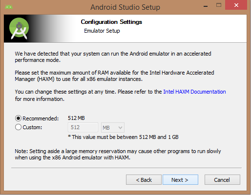

前言：
📚 Android Studio作为Google开发的安卓IDE，可谓是比之前的Eclipse强太多了，智能代码导入，Maven依赖管理等等，今天我就带大家搭建AS开发环境
系统要求
可以在以下的操作系统开始 Android 应用程序开发：
- Microsoft® Windows® 8/7/Vista/2003 (32 or 64位)。
- Mac® OS X® 10.8.5 或者更高
- GNOME or KDE 桌面
- Java JDK5 及以后版本
- Java 运行时环境6
概述
Android Studio 是开发 Android 应用程序的官方 IDE，基于 Intellij IDEA。你可以从官网Android Studio下载下载最新版本的 Android Studio。如果你是在 Windows 上安装 Android Studio 的新人，找到名为 android-studio-bundle-135.17407740-windows.exe 文件下载，并通过 Android Studio 向导指南运行。 如果要在 Mac 或者 Linux 上安装 Android Studio，可以从Android Studio Mac 下载或者Android Studio Linux 下载来下载最新版本，查看随下载文件提供的说明。这个教程假设你在 Windows 8.1 操作系统上安装你的环境。
安装
确保在安装 Android Studio 之前，已经安装好 Java JDK。安装 Java JDK，请查看Java 开发环境配置一节。
一旦启动 Android Studio 安装，需要在 Android Studio 安装器中设置 JDK5 或以后版本路径。
需要指定本机上的 Android Studio 和 Android SDK 的路径。下图展示了在 windows 8.1 64位架构上的默认安装位置。
最后，解压 SDK 软件包到本地机器，这将持续一段时间并占用2626M 的硬盘空间。 完成上面的步骤，将看到结束按钮，并可以在欢迎界面中打开 Android Studio 项目，至此，安装已完成。
CopyRight @XuanRan 2018-2021